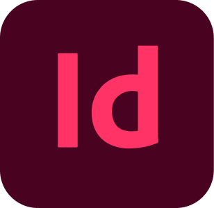

Reis app
Nike >
Opdracht:
Ontwerp een multi-device website voor op reis. Het prototype moet laten zien wat de gebruiker voor, tijdens en na de reis met de website kan doen.
Geleerd:
- Adobe XD
- Adobe InDesign
Beschrijving:
In het tweede jaar heb ik MyTravelJournal ontworpen, een website waar reizigers hun ervaringen kunnen opslaan en kunnen delen met anderen. Op de website kunnen gebruikers reviews, foto’s en berichten in hun eigen journal plaatsen. Ook kan de gebruiker zelf kiezen met wie hij zijn ervaringen deelt.
De website kan gebruikt worden op verschillende momenten tijdens de reis. De gebruiker kan:
- Voor de reis
- zoeken naar een bestemming
- informatie zoeken over een bestemming
- Aanbevelingen zien
- Tijdens de reis
- reviews lezen
- reviews plaatsen
- kiezen met wie het bericht gedeeld wordt
- inchecken bij een locatie
- de drukte zien bij een locatie
- Na de reis
- terugkijken naar eigen reizen
- privé berichten delen met anderen